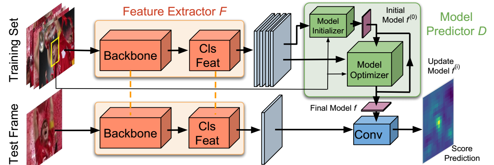

The current strive towards end-to-end trainable computer vision systems imposes major challenges for the task of visual tracking. In contrast to most other vision problems, tracking requires the learning of a robust target-specific appearance model online, during the inference stage. To be end-to-end trainable, the online learning of the target model thus needs to be embedded in the tracking architecture itself. Due to these difficulties, the popular Siamese paradigm simply predicts a target feature template. However, such a model possesses limited discriminative power due to its inability of integrating background information.
We develop an end-to-end tracking architecture, capable of fully exploiting both target and background appearance information for target model prediction. Our architecture is derived from a discriminative learning loss by designing a dedicated optimization process that is capable of predicting a powerful model in only a few iterations. Furthermore, our approach is able to learn key aspects of the discriminative loss itself. The proposed tracker sets a new state-of-the-art on 6 tracking benchmarks, achieving an EAO score of 0.440 on VOT2018, while running at over 40 FPS.
Martin Danelljan, Goutam Bhat, Luc Van Gool, Radu Timofte.
Learning Discriminative Model Prediction for Tracking.
IEEE International Conference on Computer Vision (ICCV), 2019.